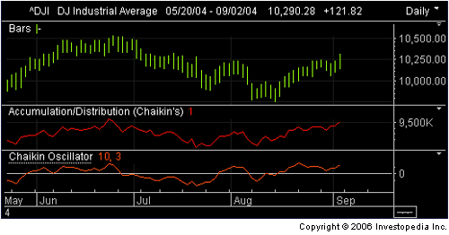
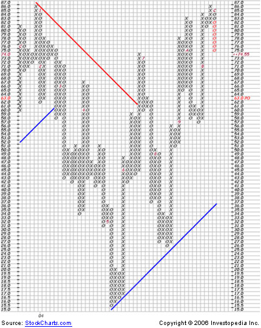
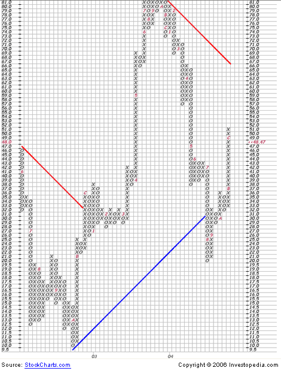
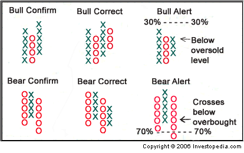
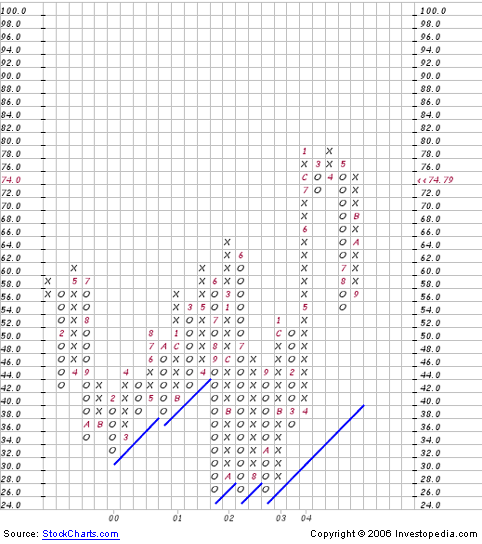

Each day at the posts of specialists at the New York Stock Exchange, and inside the networked computers of Nasdaq market makers, a battle between bulls and bears rages. Each side tries to pull the market in the desired direction while frustrating the other side. As prices move up and down, the winner of the day is printed on each stock's price chart.
Internal indicators can be used to measure the force of the bulls and bears as they exert themselves. Volume indicates traders' level of participation - are they buying stocks that are going up, or selling shares of the losers? Stocks making new highs or lows for the year reveal traders' level of enthusiasm for the direction of market prices. The number of stocks ticking up or down speaks of the breadth of a rally or a retreat, that is, the number of stocks included in the move - something an index or simple price chart cannot do.
Charting volume, new high/low and advance/decline data for a given market is a way to confirm the direction of prices. Various calculations can be applied to these values to fine-tune their signals. In this feature on internal indicators, we will examine the more useful and popular methods of measuring market breadth, from volume to point-and-figure indicators.
Fortunately, the basic signals conveyed by volume data are easy to read. When a stock is traded, the transaction is recorded and included in the daily volume. When volume levels spike for a stock, index or exchange, the spike points to a price at which a large portion of ownership has changed hands. These prices are significant because they mark a break-even point for the new shareholders and are likely candidates for support/resistance levels - the larger the spike, the more significant the price.
Over time, if price moves steadily upward with strong volume, this indicates that buyers are accumulating shares and supply is becoming increasingly limited: bulls are winning the fight. Conversely, if price moves steadily downward with strong volume, sellers are unloading shares and outstripping demand: bears are taking this battle.
Cumulative Volume Index
By separating the up volume from the down volume, traders can design internal indicators to support their assertions about the direction of the given stock, index or market.
The first indicator we examine is called the cumulative volume index, or CVI. CVI is calculated by subtracting the down volume (that is, how many shares of losing stocks changed hands) from the up volume (the tally of shares traded in winning stocks) each day and adding that number to the previous day's value for CVI.
The formula looks something like this:
A chart of cumulative volume is usually drawn with a line connecting each day's value. The chart can be analyzed in the same manner as a price chart: by drawing trendlines to indicate direction and support/resistance levels. The actual value of cumulative volume is not important - only the direction and pattern of the chart matter.CVI = (Up Volume - Down Volume) + Previous Day's CVI
The chart of cumulative volume is most useful when drawn together with a price plot. In this format, look for cumulative volume to reach new highs or lows in tandem with price. This situation indicates that the majority of shares are taking part in the market's direction, so the move can be confirmed. When cumulative volume fails to track the movement in price, a divergence is signaled, indicating that the majority of stocks are not taking part in the move. Look for reversals near these locations on the price chart.
On-Balance Volume
On-balance volume (OBV) is quite similar to the cumulative volume index, but OBV adds or subtracts each day's volume from the previous day's volume based on whether the price moves up or down.
If today's price is higher than yesterday's, the formula for on-balance volume looks like this:
If today's price is lower than yesterday's, this is the formula:OBV = Previous Day's Value + Today's Volume
A chart of OBV is interpreted in the same way as a chart of cumulative volume. The chart should look similar to the price chart, and it can also be studied with trendlines and moving averages.OBV = Previous Day's Value - Today's Volume
Up/Down Volume Spread
The up/down volume spread is similar to cumulative volume, except the difference isn't added together each day. The formula is simply this:
This calculation creates a fast oscillator that revolves around a zero line. Traders can fine-tune a moving average of volume spread to smooth the signals. As the oscillator crosses the zero line, watch for a change in trend. When the oscillator reaches its extremes, the market could be overbought or oversold. Again, here it is useful to study volume spread in conjunction with a price chart.Volume Spread = Up Volume - Down Volume
Up/Down Volume Ratio
Just as its name indicates, the up/down volume ratio is up volume divided by down volume:
A value of 3, for example, indicates that three times as many shares advanced as declined on a given day. The chart can be smoothed using a moving average if so desired. Look for a peaking ratio value at new highs to confirm an upward move in stocks. Fractional values indicate market weakness and should be used to confirm new lows on the price plot.Volume Ratio = Up Volume / Down Volume
Accumulation/Distribution & the Chaiken Oscillator
Designed by Marc Chaiken, the accumulation/distribution indicator is based on the assumption that when a stock or index closes near its high of the day, traders are accumulating shares. In other words, accumulation/distribution weighs volume according to how close to a given day's high or low a stock or index closes. The formula for weighted volume looks like this:
Weighted Volume = Volume [(Close - Low) - (High - Close)] / (High - Low)This value is then used to calculate accumulation/distribution:
Accumulation/Distribution = Weighted Volume + Previous Day's ValueThe same rules for interpreting the other volume indicators apply to the accumulation/distribution line. It is used to confirm price movement in a given stock or index. It should be plotted in its own pane and can be smoothed with a moving average.
A similar indicator called the Chaiken Oscillator further refines the accumulation/distribution line by calculating the spread between its three-day and 10-day exponential moving averages. The formula looks like this:
Chaiken Oscillator = Three-day EMA of A/D - 10-day EMA of A/DBelow is an example of a bar chart of the Dow Jones Industrial Average with its accumulation/distribution line and Chaiken Oscillator below it:
|  |
As the Dow Industrials reach a new intermediate high in early September, the accumulation/distribution chart below it confirms the move by also reaching a new intermediate high, but the Chaikin Oscillator points to slowing momentum because it fails to reach the level of its last peak.
Force Index
The force index combines price and volume into one value, attempting to measure the force behind a move in price. It can be read as an oscillator or cumulatively. Here's the formula:
Force Index = Volume(Today's Price – Yesterday's Price)Crosses above and below the zero line can be read as a change in market trend. Because of the volatility of the force index, using a moving average to smooth and fine-tune the signals can be helpful.
In Conclusion
Keep in mind that this overview is not to meant to be an exhaustive study, but a useful primer for the novice market technician. It may be difficult to find a free source for a few of these charts but StockCharts.com provides free charting tools, and many of these indicators are included. Most professional trading software packages include all of the above data and charts for those willing to pay a steep price.
Because of the broad market implications and forceful nature of new 52-week highs/lows, market technicians keep a close eye on this statistic. The field of technical analysis has designed a number of indicators to grade the underlying momentum created by the events driving the market in either direction.
Forces of Highs and Lows
When shares of a publicly traded company hit a new high for the year, everyone involved can rest assured that things are on the right track. Not only are investors rewarded, but the work of the company's CEO, executives and employees is validated. All this optimism in the business attracts new attention from traders and institutional investors looking to capitalize on the stock's momentum.
Rallies from a new 52-week high can be explosive, picking up steam as traders migrate to stocks that are making a consistent profit. If the broader market begins to see many shares making new highs, that has the power to drive most everything up, squeezing short sellers and igniting a rally - perhaps even a new bull market.
Of course, the opposite is also true. When a stock hits a new 52-week low, something at that business has definitely gone awry, resulting in angry investors. A new 52-week low could mean margins are being squeezed, customers are drying up, or a brand is shedding market share. The negativity can feed on itself as short sellers drive the stock lower and fund managers make the tough decision to take their lumps and wash their hands of a bad trade. Bear markets often begin after a business reports a disappointing performance, forcing down expectations for the broader market.
Each day the financial news networks and websites report the number of new highs and new lows. That data is incorporated into market breadth indicators and then compared to index charts to judge market force and direction. There are five popular indicators that are constructed with new high/low data: (1) the cumulative new high/low line, (2) the new-high minus new-low oscillator, (3) the new high/low ratio, (4) the percentage of new high to new high plus new low and (5) the percentage of new highs to total market. It is important to remember that the differences between these five indicators are subtle and can best be mastered by continued observance.
1. Cumulative New High/Low Line
The formula for the cumulative new high/low line looks like this:
The values for cumulative new high/low are differentiated by market, whether the NYSE or Nasdaq - stocks are not all lumped together. This indicator is plotted as a line connecting each day's value, and then it is usually compared to a price plot. Generally, the chart will look similar to the price plot, with the two making new highs and lows near the same spots.Today's Value = Yesterday's Value + (Today's New Highs - Today's New Lows)
Just like the breadth indicators using volume, the cumulative new high/low signals a change in momentum and could be forecasting a new direction in price when the line diverges from the price chart. When the new high/low indicator gets ahead of the price chart, this signals strong momentum in the underlying market.
While a plot of the 52-week high/low line is most common, any time frame can be used (such as 100-day or 200-day). Moving averages and other technical indicators can be applied to the cumulative new high/low line just like a price chart.
2. New-High Minus New-Low Oscillator
The formula for the new-high minus new-low oscillator looks like this:
| Oscillator = Today\'s New Highs – Today\'s New Lows |
This formula creates a fast oscillator that can be smoothed or fine-tuned with a moving average. The oscillator revolves around a zero line, signaling a change in trend when it crosses above or below zero. The extremes of the oscillator signal overbought and oversold conditions respectively. (An extreme is usually around 80% or 20%, but the definition can be tuned using market specific data.) The most common are the 52-week highs/lows, but any time frame can be used to construct this oscillator.
3. New High/Low Ratio
The formula for new high/low ratio looks like this:
| Ratio = Today\'s New Highs / Today\'s New Lows |
This ratio is like an oscillator because it revolves around the value 1. Although this oscillator is much slower than the oscillator discussed above, it can be smoothed further using a moving average.
Anything below 1 means there are more stocks making new lows than highs - this is extremely negative. Because of the fractional nature of the negative territory, a logarithmic chart enhances readability. The indicator spends more time above 1, meaning more stocks are making new highs than lows. Since this chart is a ratio, it is impossible for the value to be less than zero. The extremes of the indicator represent overbought/oversold territory. The new high/low indicator can be examined further using other technical indicators - the relative strength index (RSI) is especially useful.
4. Percentage of New-High to New High + New Low
The formula for this breadth indicator looks like this:
| % New Highs = Today\'s New Highs / (Today\'s New Highs + Today\'s New Lows) |
The reverse of this formula can also be used to construct the percent of new lows:
| % New Lows = Today\'s New Lows / (Today\'s New Highs + Today\'s New Lows) |
Both indicators are percentages, so, like the high/low ratio, their values will always be between 0 and 1, never negative. Obviously, when there is a high percentage of stocks that are making new highs, this is positive for the broader market; conversely, a large percentage of new lows doesn't bode well for the market.
Technicians monitor the shape and direction of this indicator to judge momentum, and they monitor extremes to judge overbought/oversold territory. This indicator can be compared to the underlying price chart and analyzed further using other tools of technical analysis. As with all these high/low indicators, any time frame can be used (52-weeks being the most common).
5. Percentage of New Highs to Total Market
This indicator's formula looks like this:
| % New Highs = Today\'s New Highs / Total # of Listed Stocks in Given Market |
The opposite formula can also be constructed:
| % New Lows = Today\'s New Lows / Total # of Listed Stocks in Given Market |
The indicators that measure the percentage of new highs or lows to total market are very similar to the percentage we looked at above: values cannot be less than zero, direction and shape determine momentum, and other technical indicators are applicable. Since you are comparing a much larger base to the new highs or lows, the percentage values here will be much lower.
Stockcharts.com provides free charts that can be customized for many of the market breadth indicators we discussed here. For others, technicians will need to search for a fee-based charting service that provides a wider array of breadth data.
Thirty stocks make up the Dow Jones Industrial Average. If the Dow moves up 20 points, there's no way to tell from that number if the increase is the result of only one stock going way up or many stocks each going up a small amount. The advance/decline data for the Dow can answer this question. If five stocks advance and 10 stocks decline (while 15 remain unchanged), then only a few stocks are responsible for carrying the market higher. Therefore, the rally is not broad-based.
In this section, we examine the many ways market technicians use advance/decline data to interpret the breadth of the market. The advance/decline numbers for the NYSE and the Nasdaq are reported each day, and some of the related charts are the most popular internal indicators.
Advance/Decline Line
The advance/decline line is the most popular of all internal indicators by far. It is a very simple measure of how many stocks are taking part in a rally or sell-off. This is the very meaning of market breadth, which answers the question, "how broad is the rally?" The formula for the advance/decline line looks like this:
| A/D Line = (# of Advancing Stocks - # of Declining Stocks) + Yesterday\'s A/D Line Value |
The most popular data used for the A/D line is from the NYSE or Nasdaq markets. It is cumulative and normally plots a line similar to the price chart of the given index. The A/D line can be used alone or together with the price chart to look for divergences. A divergence suggests that a move in the price chart is unsupported by the broad market, and it should, therefore, be taken as a warning of an impending turning point in the index or market.
A traditional technical indicator, such as a moving average or a stochastic oscillator, can be applied to the chart or used to smooth the signals it gives.
Advance/Decline Spread
A variation on the A/D line is the A/D spread. Just as its name implies, the A/D spread charts the difference between the number of advancing stocks and declining stocks in a given market on a given day. Unlike the A/D line, the spread is not a cumulative chart, so each day is calculated separately. The formula for the A/D spread looks like this:
| A/D Spread = # of Advancing Stocks - # of Declining Stocks |
The chart of the A/D spread is an oscillator that revolves around a zero line. The A/D spread is interpreted much like any oscillator with overbought and oversold levels near the extremes of the chart. When the A/D spread crosses above its zero line, this means more stocks are advancing than declining, and vice versa.
This oscillator is extremely fast, so a moving average is usually applied to slow the chart's movements and signals. The technician can fine tune the number of days set for the moving average to the market data.
Advance/Decline Ratio
Another variation on the A/D line is the advance/decline ratio, which divides the advancers by the decliners. Here is the formula:
| A/D Ratio = # of Advancing Stocks / # of Declining Stocks |
This formula creates values that cannot be less than zero because it is a fraction (or ratio). A value of 3 means that three times as many stocks advanced as declined. Any value less than 1 means more stocks declined than advanced. Because of the nature of fractions, the chart is more legible using a logarithmic scale. Like the A/D spread, this chart moves quickly, so it's usually smoothed with a moving average.
Absolute Breadth Index
The absolute breadth index is a measure of internal volatility. It calculates the absolute value of the difference between the number of advancing and declining stocks, making it a slight variation on the A/D spread. The formula for ABI looks like this:
| ABI = | (# of Advancing Stocks - # of Declining Stocks) | |
Because the ABI is an absolute, its value will always be positive. The chart is a representation of the volatility in the spread between advancers and decliners. The ABI can be smoothed using a moving average to facilitate drawing longer-term trend lines. A fast-paced, choppy chart of the ABI can indicate a choppy, range-bound market.
Breadth Thrust
Breadth thrust is an internal indicator that is somewhat more complicated and harder to find. It is a ratio of moving averages that creates an excellent judge of market momentum. The formula looks like this:
| Thrust = x-Day Moving Average of Advancing Stocks / x-Day Moving Average of (Advancing Stocks + Declining Stocks) |
Since this formula creates a ratio whose denominator is a sum of both advancers and decliners, the value cannot be greater than 1 or less than zero. The breadth thrust indicator, therefore, creates a percentage value that moves just like a traditional oscillator from 1 to 100 (or .01 to 1.00).
Breadth thrust can be read just like a stochastic or RSI, where overbought and oversold levels are at the extremes. Divergence with the underlying price chart points to weakening momentum. The number of days to set for the moving averages should be determined by the time-period being evaluated.
Arms Index (TRIN)
Developed by Richard Arms, TRIN is a double-ratio that divides the A/D ratio by the A/D volume ratio. The formula is somewhat long but, fortunately, the TRIN charts for the NYSE and Nasdaq are some of the easier internal indicators to find on the internet. For those who are curious, here's the formula:
| TRIN = (# of Advancing Stocks / # of Declining Stocks) / (Volume of Advancing Stocks / Volume of Declining Stocks) |
For reasons that should now be obvious, the value of TRIN cannot be less than zero. The Arms Index is read somewhat counter intuitively. A value of less than 1 means advancing stocks are getting more than their share of volume, which is bullish for the market. When the value of TRIN is more than 1, declining shares are taking an outsized amount of volume, which is bearish for the market.
TRIN is usually smoothed using a moving average, which should be tuned to the time-period being evaluated. Trend lines drawn from the moving average reveal the direction of market momentum. (Remember that the value for TRIN moves down as advancing volume goes up).
McClellan Oscillator
Searching for an even more refined internal indicator, Sherman McClellan designed his own oscillator. Though the calculations for McClellan's Oscillator are far too complicated to compute by hand, they help demonstrate how the indicator works, so here they are:
| McClellan Oscillator = [ 19-Day Exp. Moving Average of (# of Advancing Stocks - # of Declining Stocks) ] / [ 39-Day Exp. Moving Average of (# of Advancing Stocks - # of Declining Stocks)] |
This formula creates a ratio comparing the 19-day and 39-day EMA of the A/D spread. The chart is an oscillator that ranges from +100 to –100 with overbought and oversold levels usually found at +70 and –70 respectively. The McClellan Oscillator can be read just like any other oscillator and is usually not smoothed, but it can be charted with a moving average as an indicator line.
Brief History
Before the dawn of computers, the point-and-figure (P&F) technique of charting was popular among market strategists on Wall Street. Back then, with P&F charting, a pencil and paper were enough to keep up with many charts on a daily basis. Then, as the internet brought trading to the general public, P&F charting techniques were revisited and re-popularized because they can weed out market noise, point to major breakout, resistance and support levels, and forecast directional moves in price.
The powerful attributes of P&F charting lend themselves exceptionally well to the study of market internals. This section concentrates on two P&F-based charts that have become widely used as internal indicators: the percent-over-50 and percent-over-200 indicators. By learning to read market internals, you will be able to read the underlying forces between supply and demand and to make more informed trades.
Percent-over-50 Indicator
The P&F chart of the percent-over-50 is an early indicator of a new short-term trend in the market, and can be read much like any P&F price chart. By applying the P&F charting technique to this percent-over-50, market technicians can track the movements in value and quickly find breakout, resistance and support levels.
One of the simplest short-term buy signals in technical analysis revolves around buying stocks when they cross above their 50-day moving average. While this is not always a profitable strategy with individual stocks, a high percentage of stocks crossing above their 50-day moving average can indicate that the market is in a bullish, upward swing - at least for the shorter term.
The percent-over-50 P&F chart traditionally uses a box value of 1% with a three-box reversal. As a downward column of 'O's reverses into a new column of 'X's, the percent-over-50 chart indicates that stocks are crossing above their 50-day moving average. If the column of 'X's overtakes the previous column of 'X's, a bullish short-term trend is confirmed. The opposite is also true: when a column of 'O's moves past the previous column of 'O's, the percent-over-50 chart confirms a bearish short-term trend. As a column of 'X's or 'O's approaches the extremes of the chart, the percent-over-50 signals an overbought or oversold condition, and a reversal at these levels could mean a significant backlash.
Using the percent-over-50 indicator in a long-position trading strategy might involve looking for three or four progressively narrower markets in a confirmed upward trend. For example, start with the NYSE percent-over-50. If the chart gives a bullish signal, move ahead to the NYSE sector indexes to see which one is the strongest. Move further still and determine which industries in that sector exhibit the most bullishness in their percent-over-50 chart. By finding these industries, the trader can focus on a much narrower field, and, by getting an idea of which companies are leading the market, has a higher probability of finding a winner.
Here is an example chart of the NYSE percent-over-50
|  |
Percent-Over-200 Indicator
As you might imagine, the percent-over-200 shares many similarities with the percent-over-50. In fact, it's virtually the same indicator except it measures stocks trading above their 200-day moving average. Since the 200-day moving average of a stock price moves far slower than the 50-day moving average, a cross above or below this value is usually more significant and longer-term in scope.
All the traditional rules of P&F charting apply here. The percent-over-200 is commonly charted with a 1% box value and a three-box reversal. Just like the percent-over-50, the percent-over-200 is an oscillator that charts values between zero and 100. The extremes of the chart point to more dangerous overbought or oversold conditions, where a reversal can mean fast-changing market conditions.
When designing a trading strategy using the percent-over-200, try incorporating the percent-over-50. For example, after finding an industry that is showing a longer-term bullish trend on the percent-over-200 chart, watch for a reversal in the percent-over-50, which signals a more conservative stop-loss in that industry.
Movements in an individual stock position should always trump a broader market indicator if they aren't working together. Don't enter a single position because the broader market was in an uptrend.
Here is an example of a P&F chart of the Nasdaq percent-over-200:
|  |
Bullish Percent Index
In 1955, a company named Chartcraft (now known as Investor's Intelligence) used P&F charting to develop a broad-market indicator called the bullish percent index. The index was first applied to the NYSE, but can now be found representing most markets and sectors. Each evening after the market closes, the bullish percent index is calculated as the percentage of stocks flashing a buy signal on their P&F chart in relation to the total number of stocks in that market. This is plotted as its own P&F chart. Because the value of the chart is a percentage, it will always range from zero to 100.
The bullish percent index is always in one (and only one) of six stages. These six stages signal the mode of the market (bullish or bearish), and for each mode there is an appropriate strategy. Here is a list of the six stages and what they mean:
| Bull confirmed - Bull confirmed is just as it sounds - the most bullish signal the index emits, giving traders a green light to take on multiple long positions with confidence. In the bull confirmed phase, the bullish percent index has a column of \'X\'s on its right edge, and this column must have surpassed the next column of \'X\'s over to the left by at least one square. Since a market that is in bull confirmed mode is upwardly trending, directional indicators such as moving average convergence divergence (MACD) are more appropriate than oscillators during this phase.
Bear confirmed - Again, just as it sounds, the bear-confirmed phase is the most bearish signal the index gives. In this mode, the bullish percent index has a column of \'O\'s on the far right edge of the chart, and this column must surpass the next column of \'O\'s to the left by at least one square down. Since a market in the bear confirmed mode is trending downward, only short positions should be considered, and directional indicators are again the weapons of choice. Bull correction - The bull correction mode, following only a bull confirmed phase, is a sideways market or a market experiencing a correction after a bull-confirmed phase. The chart features a column of "O\'s on the right edge that has yet to pass the last "O\'s column. Long positions should be taken with caution because a bull correction can reverse into a bear confirmed. During the bull-correction mode, look to oscillators like stochastic for insight into timing trades. Bear correction - A market in the bear correction phase, following only a bear-confirmed phase, is also a sideways market, and it is experiencing a correction from bear confirmed. A bear correction features a column of \'X\'s on the right edge of the chart that fails to surpass the last column of \'X\'s. Again, use short positions with caution, and use oscillators instead of directional indicators with the charts. Bull alert - The final two phases of the bullish percent index involve overbought or oversold conditions. On the bullish percent chart, readings above 70% are considered overbought, and readings below 30% are considered oversold. The bull alert phase is simply a reversal into a new column of \'X\'s from below 30% on the chart, and it indicates that the index is oversold and due for a bounce. As soon as the index signals a bull alert, traders can take long positions with caution until the \'X\'s cross back above the 30% line. Bear alert - A bear alert is simply the opposite of a bull alert, except to signal a bear alert, the index must be crossing below the 70% line with a column of \'O\'s. It is important to remember that for a bear alert to signal, the column of \'O\'s must actually cross back below the 70% line. During a bear alert, the market is overbought and due for a sell-off. Take short positions with caution until the market reverts back to bull confirmed. During alert phases, it is a good idea to take quick profits (10-15%) because there is a good chance the market will reverse. |
Here are charts showing each of these phases:
|  |
A good trading strategy using the bullish percent index would include matching the signals of the market, sector and industry you are looking to trade. To further confirm the signal, try incorporating the percent-over-50 and percent-over-200 charts as well. Try applying the six stages of the bullish percent index to the percent-over-50 and 200 charts to read their signals more clearly. Stockcharts.com provides free P&F charts of many sector and industry bullish percent indexes.
Here is an example of a NYSE bullish percent index:
|  |
Conclusion
Point-and-figure charting, by removing the time element from the chart and recording only larger price moves, can filter out market noise. The P&F chart of the percent-over-50 signals new short-term trends, and market technicians can use it to find breakout, resistance and support levels quickly. The percent-over-200 measures stocks trading above their 200-day moving average, a condition usually more significant and longer-term in scope. The P&F chart of the bullish percent index, by occupying a particular phase, displays the market's condition, and, as such, indicates an appropriate strategy.
This directory on market breadth introduces traders to how they can gain an advantage in the market, but it will take time to master the movements of each individual indicator. Try following two or three internal indicators every day instead of trying to master them all. Many of the indicators overlap, so find the ones that work for your personal trading style and focus on those. Always rely first on the price data of the vehicle you're trading, and then check that the internal indicators reinforce your position.
Here is an overview of the main points we dealt with in this tutorial on market breadth:
{kind=link}
{kind=link}
{kind=link}
{kind=link}
{kind=link}